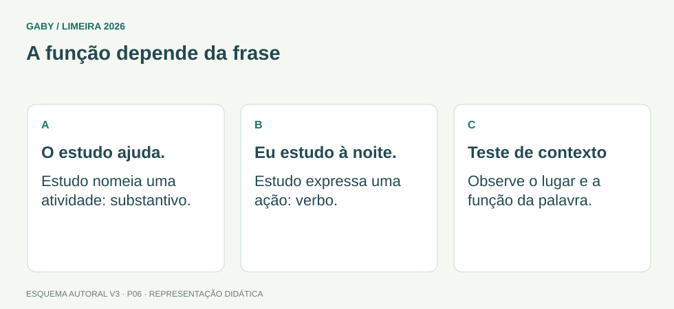

Objetivos do módulo
- Identificar a classe de uma palavra pelo uso no contexto.
- Entender a função semântica de artigos, pronomes, advérbios, preposições e conjunções.
- Perceber mudança de classe por substantivação e uso contextual.
- Reconhecer as dez classes de palavras e distinguir as variáveis das invariáveis.
- Classificar substantivos, artigos, adjetivos e numerais e reconhecer suas flexões.
- Classificar pronomes (pessoais, possessivos, demonstrativos, indefinidos, interrogativos e relativos) e empregar “eu” e “mim” conforme a norma-padrão.
- Reconhecer modos, tempos, formas nominais e vozes do verbo.
- Identificar o valor de advérbios (inclusive de intensidade e modalizadores), preposições e conjunções coordenativas e subordinativas.
- Classificar palavras que mudam de classe conforme o contexto: “que”, “se”, “como”, “a”, “o”.
A função depende da frase

Descrição em texto do esquema
- O estudo ajuda.: Estudo nomeia uma atividade: substantivo.
- Eu estudo à noite.: Estudo expressa uma ação: verbo.
- Teste de contexto: Observe o lugar e a função da palavra.
Oficina visual · aplique o esquema
Classifique “rápido” em “o atendimento rápido ajudou” e “o atendente respondeu rápido”.
Atividade autoral complementar da V3. Registre sua resposta; a resolução está no arquivo de gabarito e revisão.
Mapa do conteúdo
1. Classe depende do funcionamento
A classificação não deve ser feita apenas pela aparência da palavra. “Jantar” é verbo em “vamos jantar” e substantivo em “o jantar está pronto”. O artigo é um forte sinal de substantivação.
Em prova, a banca costuma destacar uma palavra e perguntar sua classe no trecho. Leia o entorno e observe o que ela modifica ou substitui.
As dez classes
A gramática normativa reconhece dez classes de palavras. Seis são variáveis: mudam de forma para indicar gênero, número, pessoa, tempo ou modo. Quatro são invariáveis: têm sempre a mesma forma.
| Classe | Varia? | O que faz | Exemplo |
|---|---|---|---|
| Substantivo | sim (gênero, número, grau) | nomeia seres, lugares, objetos, ideias, ações | caderno, Piracicaba, saudade |
| Artigo | sim (gênero, número) | antecede o substantivo e o determina | o, a, os, as, um, uma, uns, umas |
| Adjetivo | sim (gênero, número, grau) | caracteriza o substantivo | prova difícil |
| Numeral | em parte (um/uma, dois/duas, duzentos/duzentas, primeiro/primeira) | indica quantidade, ordem, multiplicação ou fração | três, terceiro, triplo, metade |
| Pronome | sim (gênero, número, pessoa) | substitui ou acompanha o substantivo, indicando a pessoa do discurso | ela, minha, aquilo, ninguém |
| Verbo | sim (pessoa, número, tempo, modo, voz) | indica ação, estado ou fenômeno | correr, estar, chover |
| Advérbio | não | modifica verbo, adjetivo, outro advérbio ou a frase | ontem, aqui, bem, não |
| Preposição | não | liga dois termos, fazendo um depender do outro | de, em, para, com |
| Conjunção | não | liga orações ou termos de mesma função | e, mas, porque, embora |
| Interjeição | não | exprime emoção, sensação ou apelo | ah!, opa!, psiu! |
Como classificar pelo contexto
- Localize a palavra e pergunte o que ela faz na frase: nomeia, acompanha um nome, substitui um nome, indica ação, modifica, liga ou exprime emoção?
- Se acompanha um substantivo e concorda com ele, é artigo, adjetivo, numeral ou pronome.
- Se ocupa o lugar de um nome (como sujeito ou complemento), é substantivo ou pronome.
- Se se liga a um verbo, a um adjetivo ou a outro advérbio sem concordar com nada, é advérbio.
- Se apenas liga, é preposição (liga termos, subordinando um ao outro) ou conjunção (liga orações ou termos coordenados).
Substantivação (derivação imprópria)
Substantivação é a passagem de uma palavra de outra classe para a classe do substantivo, sem mudança de forma. A gramática chama esse processo de derivação imprópria: a palavra não ganha prefixo nem sufixo; muda só a classe. O sinal mais comum é um determinante antes dela (artigo, pronome ou numeral).
| Classe de origem | Exemplo substantivado | Sinal |
|---|---|---|
| Verbo no infinitivo | “O olhar da criança comoveu a plateia.” | artigo antes; complemento ligado por preposição (“da criança”), como o de um nome |
| Adjetivo | “O belo nem sempre é caro.” | artigo; o adjetivo passa a nomear a qualidade |
| Advérbio | “Ela respondeu com um sim seguro.” | artigo e adjetivo que o caracteriza |
| Conjunção | “Ninguém explicou o porquê da mudança.” | artigo; o “porquê” substantivo é escrito junto e com acento |
Teste: se cabe um adjetivo junto da palavra (“o olhar atento da criança”) e ela funciona como sujeito ou complemento, houve substantivação. Compare com “Ela quer olhar as fotos”: “olhar” tem objeto direto (“as fotos”) e continua verbo.
2. Classes nominais
| Classe | Função típica | Exemplo |
|---|---|---|
| Substantivo | nomeia seres, ideias, ações | arquivo, gestão, coragem |
| Artigo | determina o substantivo | o, a, um, uma |
| Adjetivo | caracteriza substantivo | documento oficial |
| Numeral | quantifica/ordena | dois, segundo |
| Pronome | acompanha ou substitui nome | ele, este, meu, alguém |
Os pronomes têm seção própria (seção 6). Abaixo, as demais classes nominais em detalhe.
Substantivo
Substantivo é a palavra que nomeia seres, lugares, objetos, sentimentos, qualidades e ações. As classificações mais cobradas:
| Tipo | O que nomeia | Exemplos |
|---|---|---|
| Próprio | um ser específico, individualizado; escreve-se com inicial maiúscula | Mariana, Piracicaba, Tietê |
| Comum | qualquer ser da espécie, de forma genérica | cidade, rio, menina |
| Concreto | ser de existência própria, real ou imaginária (pessoa, animal, objeto, lugar, ente fantástico) | mesa, professora, gato, fada |
| Abstrato | ação, estado, qualidade ou sentimento, que só existe em outro ser | leitura, cansaço, bondade, medo |
| Coletivo | um conjunto de seres da mesma espécie, mesmo no singular | alcateia (lobos), arquipélago (ilhas), enxame (abelhas), acervo (obras), elenco (atores) |
Teste do abstrato: pergunte “de quem?” ou “de quê?”. A bondade é sempre de alguém; a leitura é de algo. Teste do coletivo: a palavra está no singular, mas nomeia vários seres (um enxame = muitas abelhas). Um mesmo substantivo pode ser comum e concreto ao mesmo tempo (“rio”), ou próprio e concreto (“Tietê”).
Gênero e número. O substantivo varia em número (livro/livros, pão/pães, cidadão/cidadãos, papel/papéis) e, muitas vezes, em gênero (aluno/aluna, ator/atriz). Há substantivos que não flexionam em gênero: comuns de dois gêneros (o/a estudante, o/a colega: o artigo mostra o gênero), sobrecomuns (a criança, a pessoa, o indivíduo: uma só forma e um só artigo para ambos os sexos) e epicenos (a onça macho, a onça fêmea). Em alguns, o gênero muda o sentido: o cabeça (o líder) × a cabeça (parte do corpo).
Artigo definido × indefinido
Artigo é a palavra que vem antes do substantivo e indica se o ser é conhecido (determinado) ou não. Concorda com o substantivo em gênero e número.
| Tipo | Formas | Valor | Exemplo |
|---|---|---|---|
| Definido | o, a, os, as | apresenta um ser já conhecido, identificado ou único no contexto | “A diretora assinou o diploma.” (uma diretora e um diploma específicos) |
| Indefinido | um, uma, uns, umas | apresenta um ser qualquer, ainda não identificado, ou introduz algo novo no texto | “Um aluno esqueceu uma mochila na sala.” |
O artigo se combina com preposições: de + o = do; em + a = na; por + os = pelos; em + um = num; a + a = à (crase). Em “certidão do cartório”, “do” contém a preposição “de” e o artigo “o”.
Artigo × numeral. “Um” é artigo quando apresenta um ser qualquer (“Chegou um aviso”) e numeral quando indica quantidade, em oposição a outras (“Faltou só um candidato, não dois”). Artigo × pronome × preposição. “O” e “a” sem substantivo depois, junto de verbo, são pronomes; “a” diante de palavra masculina ou de verbo é preposição (veja a seção 9).
Adjetivo e locução adjetiva
Adjetivo é a palavra que caracteriza o substantivo (qualidade, estado, aspecto, origem) e concorda com ele em gênero e número: “salas amplas”, “aluno atento”. Ele aparece em duas posições:
- junto do substantivo, como adjunto: “o relatório claro”;
- ligado ao substantivo por verbo de ligação (ser, estar, parecer, permanecer, ficar, continuar, tornar-se), como predicativo: “O relatório ficou claro”; “As salas continuam amplas”. A classe continua sendo adjetivo, embora venha depois do verbo.
Locução adjetiva é a expressão, em geral preposição + substantivo, que tem valor de adjetivo: “voz de criança” (infantil), “período da tarde” (vespertino), “água de chuva” (pluvial), “transporte de rio” (fluvial), “corpo de professores” (docente). Teste: a expressão está presa a um substantivo e responde “de que tipo?”; muitas vezes pode ser trocada por um adjetivo equivalente.
Não confunda com a locução adverbial, que se liga ao verbo e indica circunstância: “A viagem de trem foi longa” (locução adjetiva: caracteriza “viagem”) × “Ela viajou de trem” (locução adverbial: indica o meio de “viajou”).
Flexão. O adjetivo concorda com o substantivo: “diploma novo”, “carteiras novas”. Nos adjetivos compostos, em regra só o último elemento varia: “consultas médico-hospitalares”.
Numeral
| Tipo | Indica | Exemplos | Pergunta-teste |
|---|---|---|---|
| Cardinal | quantidade exata | dois, quinze, cem, mil | Quantos? |
| Ordinal | posição numa sequência | primeiro, décimo, vigésimo, centésimo | Em que posição? |
| Multiplicativo | aumento proporcional (quantas vezes) | dobro (duplo), triplo, quádruplo | Quantas vezes maior? |
| Fracionário | divisão; parte de um todo | metade (meio), terço, quarto, décimo | Que parte? |
A partir de “quarto”, a mesma forma serve ao ordinal e ao fracionário; decide o contexto: “o quarto colocado” (ordinal, posição) × “um quarto da turma” (fracionário, parte). Palavras como dúzia, dezena e centena são tratadas por muitas gramáticas como substantivos coletivos numéricos; alguns materiais as chamam de numerais coletivos.
Atenção a outras classes. “Segundo” é numeral em “o segundo andar”, mas preposição acidental em “segundo o edital” (= conforme) e substantivo em “espere um segundo”. “Meio” é numeral em “meio quilo” (e varia: “meia hora”), mas advérbio invariável em “ela ficou meio preocupada”.
3. Verbo e advérbio
Verbo expressa ação, estado, fenômeno ou processo e varia em tempo, modo, pessoa e número. Advérbio modifica verbo, adjetivo, outro advérbio ou toda a oração, indicando circunstâncias como tempo, modo, lugar e intensidade.
Em “chegou muito cedo”, “cedo” modifica “chegou” e “muito” intensifica “cedo”. O advérbio é estudado em detalhe na seção 7; aqui o foco é o verbo.
Modos e tempos mais cobrados
O modo indica a atitude de quem fala diante do fato: o indicativo apresenta o fato como certo; o subjuntivo, como hipótese, desejo ou dúvida; o imperativo exprime ordem, pedido ou conselho. Exemplos com o verbo “estudar”:
| Modo | Tempo | Forma | Uso típico |
|---|---|---|---|
| Indicativo | Presente | eu estudo | fato atual ou habitual |
| Indicativo | Pretérito perfeito | eu estudei | ação passada concluída |
| Indicativo | Pretérito imperfeito | eu estudava | ação passada contínua ou habitual |
| Indicativo | Pretérito mais-que-perfeito | eu estudara (composto: eu tinha estudado) | passado anterior a outro passado |
| Indicativo | Futuro do presente | eu estudarei | fato futuro |
| Indicativo | Futuro do pretérito | eu estudaria | fato que dependeria de uma condição; pedido polido |
| Subjuntivo | Presente | que eu estude | “Espero que ele estude.” |
| Subjuntivo | Pretérito imperfeito | se eu estudasse | “Se eu estudasse mais, passaria.” |
| Subjuntivo | Futuro | quando eu estudar | “Quando você estudar, avise.” |
| Imperativo | Afirmativo / negativo | estude (você) / não estude (você) | “Leia o edital.” |
Formas nominais: infinitivo, gerúndio e particípio
Três formas do verbo não exprimem, sozinhas, tempo nem modo e podem fazer o papel de nomes:
| Forma | Terminação | Exemplo | Pode funcionar como |
|---|---|---|---|
| Infinitivo | -r: estudar, vender, partir | “Revisar exige atenção.” | substantivo (“o jantar”) |
| Gerúndio | -ndo: estudando, vendendo, partindo | “Saiu correndo.” | advérbio (modo, tempo) |
| Particípio | -do/-da: estudado, vendido, partido; há formas irregulares (feito, escrito, aberto) | “Trabalho concluído.” | adjetivo; forma tempos compostos e voz passiva |
O infinitivo pode ser pessoal, flexionado com sujeito próprio (“É hora de vocês saírem”; “para estudarmos”), ou impessoal (“Estudar é preciso”). Com um verbo auxiliar, as formas nominais formam a locução verbal: “vai estudar”, “está estudando”, “tinha estudado”, “foi estudado”. Na locução, o verbo principal é a forma nominal; quem flexiona é o auxiliar.
Vozes verbais
| Voz | Estrutura | Exemplo |
|---|---|---|
| Ativa | o sujeito pratica a ação | “A comissão analisou os recursos.” |
| Passiva analítica | verbo ser + particípio; o agente vem com “por” | “Os recursos foram analisados pela comissão.” |
| Passiva sintética | verbo transitivo direto + “se” (partícula apassivadora) | “Analisaram-se os recursos.” (= os recursos foram analisados) |
| Reflexiva | o sujeito pratica e recebe a ação | “O atleta se alongou antes da prova.” |
Na passiva analítica, o particípio concorda com o sujeito (“As propostas foram aprovadas”). Nos tempos compostos da voz passiva, aparecem dois particípios: “O pedido tinha sido aceito” (auxiliar ter + particípio de ser + particípio do verbo principal).
Verbo haver × preposição “a”
“Há” é forma do verbo haver (3ª pessoa do singular do presente do indicativo). No sentido de existir e no de tempo transcorrido, haver é impessoal: fica sempre no singular. Já o “a” sem acento, nessas expressões, é preposição e indica tempo futuro ou distância.
| Forma | Classe | Sentido | Exemplo |
|---|---|---|---|
| há | verbo haver | existir | “Há vagas no estacionamento.” (= existem vagas) |
| há | verbo haver | tempo passado | “A obra começou há três meses.” (= faz três meses) |
| a | preposição | tempo futuro | “A obra termina daqui a três meses.” |
| a | preposição | distância | “A escola fica a dois quarteirões.” |
Teste: troque por “faz” ou por “existe(m)”. Se o sentido se mantém, use “há”. O Manual de Redação da Presidência lembra que “há dois anos atrás” é pleonasmo (basta “há dois anos”) e que o haver impessoal não vai ao plural: “Se houver dúvidas” (e não “houverem”).
4. Preposição e conjunção
Preposição liga termos e estabelece relações: de, em, a, para, com, por etc. Conjunção liga orações ou termos de função semelhante e explicita relações lógicas: adição, oposição, causa, condição, conclusão. As conjunções são estudadas em detalhe na seção 8.
Preposição
Preposição é a palavra invariável que liga dois termos e faz o segundo depender do primeiro: “livro de receitas”, “gosto de música”, “saiu com pressa”. O sentido (posse, lugar, finalidade, companhia, meio, causa) nasce da relação que ela estabelece entre os termos.
| Tipo | Definição | Exemplos |
|---|---|---|
| Essenciais | palavras que só funcionam como preposição | a, ante, após, até, com, contra, de, desde, em, entre, para, perante, por, sem, sob, sobre, trás |
| Acidentais | palavras de outras classes que, em certos contextos, funcionam como preposição | conforme, consoante, segundo, durante, mediante, exceto, salvo, fora, afora, menos, senão, visto |
| Locução prepositiva | expressão de duas ou mais palavras, terminada em preposição | a fim de, apesar de, além de, por causa de, em vez de, de acordo com, perto de, antes de |
Exemplos de acidentais: “Todos votaram, exceto o relator”; “Segundo o regulamento, o prazo é de dez dias”; “O acesso é liberado mediante identificação”; “Choveu durante a cerimônia”.
Combinação e contração. A preposição se une a artigos, pronomes e advérbios. Na combinação, nenhuma das palavras perde som (a + o = ao). Na contração, há perda (de + o = do; em + a = na; de + ele = dele; em + esta = nesta; de + aqui = daqui; a + aquele = àquele).
Preposição × outras classes. “Para” é preposição em “comprou flores para a mãe”, mas é forma do verbo parar em “o ônibus para aqui”. “Entre” é preposição em “entre mim e ela”, mas é verbo (entrar) em “Entre, por favor”. “Até” é preposição em “vá até a esquina”, mas palavra denotativa de inclusão em “até o diretor compareceu” (= inclusive).
5. Interjeição e palavras denotativas
Interjeições expressam estados afetivos ou apelos: “ah!”, “ufa!”, “atenção!”. Em questões, o mais importante é reconhecer que não desempenham a mesma função sintática das classes nominais e verbais.
Interjeição é a palavra invariável que exprime, de forma direta, emoção, sensação ou apelo. Ela vale por uma frase inteira e costuma vir com ponto de exclamação. O sentido depende da entonação e do contexto: “Nossa!” pode indicar espanto, admiração ou susto.
| Valor | Exemplos |
|---|---|
| Alívio | ufa!, ah! |
| Alegria, satisfação | oba!, eba!, viva! |
| Dor | ai!, ui! |
| Admiração, espanto | nossa!, puxa!, uau!, caramba! |
| Apelo, chamamento | ei!, psiu!, alô! |
| Desejo | oxalá!, tomara! |
| Aplauso, aprovação | bravo!, muito bem! |
| Advertência | cuidado!, atenção!, olha! |
Locução interjetiva é o grupo de palavras com valor de interjeição: “Ai de mim!”, “Muito bem!”, “Valha-me Deus!”. Palavras de outras classes viram interjeição quando usadas assim: “Silêncio!” (substantivo), “Fora!” (advérbio), “Coragem!”.
Palavras denotativas. Termos como “até” e “inclusive” (inclusão), “só”, “apenas” e “somente” (exclusão), “eis” (designação) e “aliás” ou “ou melhor” (retificação) não são classificados em nenhuma das dez classes pela nomenclatura gramatical tradicional e recebem esse nome. Algumas gramáticas os tratam como advérbios.
6. Pronomes
Pronome é a palavra que substitui ou acompanha o substantivo, indicando a pessoa do discurso: 1ª pessoa (quem fala: eu, nós), 2ª (com quem se fala: tu, vós) e 3ª (de quem ou de que se fala: ele, ela).
Pronome substantivo × pronome adjetivo. Quando ocupa o lugar do substantivo, é pronome substantivo: “Isto é seu?”; “Ninguém saiu”. Quando acompanha um substantivo, é pronome adjetivo: “Este livro é seu?”; “Nenhum aluno saiu”.
Pessoais: caso reto × caso oblíquo
| Pessoa | Reto (sujeito) | Oblíquo átono (complemento sem preposição) | Oblíquo tônico (sempre com preposição) |
|---|---|---|---|
| 1ª do singular | eu | me | mim, comigo |
| 2ª do singular | tu | te | ti, contigo |
| 3ª do singular | ele, ela | se, o, a, lhe | si, consigo, ele, ela |
| 1ª do plural | nós | nos | nós, conosco |
| 2ª do plural | vós | vos | vós, convosco |
| 3ª do plural | eles, elas | se, os, as, lhes | si, consigo, eles, elas |
- Os pronomes do caso reto funcionam como sujeito: “Elas chegaram cedo”.
- Os oblíquos funcionam como complemento. “O, a, os, as” substituem o objeto direto: “Vi a professora” → “Vi-a”. “Lhe, lhes” substituem o objeto indireto de pessoa (a ele, para ela): “Entreguei o convite ao diretor” → “Entreguei-lhe o convite”.
- Depois de forma verbal terminada em -r, -s ou -z, “o, a” viram “lo, la”: “vou ajudá-la”. Depois de som nasal, viram “no, na”: “chamaram-no”.
- Na norma-padrão, o pronome reto não é complemento: “Encontrei ele” é comum na fala, mas a forma-padrão é “Encontrei-o”.
Eu × mim
Regra apresentada por Evanildo Bechara em texto publicado pela Academia Brasileira de Letras: usa-se eu quando o pronome é sujeito do infinitivo que vem em seguida; usa-se mim quando não vem infinitivo depois. A regra tradicional da gramática normativa completa: depois de preposição, usa-se o oblíquo tônico (mim, ti), inclusive com “entre”.
| Caso | Regra | Correto | Erro comum |
|---|---|---|---|
| Preposição sem infinitivo depois | oblíquo tônico “mim” | “O recado é para mim.” / “Ela sentou perto de mim.” | “O recado é para eu.” |
| Pronome sujeito de um infinitivo | “eu”, mesmo depois de “para” | “Ela trouxe o texto para eu revisar.” (quem revisa? eu) | “para mim revisar” |
| “Entre” com dois pronomes | oblíquos tônicos | “Isso fica entre mim e ti.” / “entre mim e ela” | “entre eu e ela” |
| Comparação com “(do) que” | “eu”: é sujeito do verbo subentendido | “Ele digita mais depressa do que eu (digito).” | “do que mim” |
| “Para mim” separado por pausa | “mim” completa a expressão seguinte, não é sujeito do infinitivo | “Para mim, acordar cedo é difícil.” (= acordar cedo é difícil para mim) | — |
Teste prático: veja o que vem depois do pronome. Se é um infinitivo e o pronome é quem pratica a ação dele, use “eu”. Se não é, e há preposição antes, use “mim”.
Pronomes de tratamento
Você, senhor(a), Vossa Senhoria, Vossa Excelência e semelhantes referem-se à pessoa com quem se fala, mas levam o verbo e os possessivos para a 3ª pessoa, como registra o Manual de Redação da Presidência: “Vossa Senhoria informou seu endereço” (e não “informastes vosso”).
Possessivos
Meu, teu, seu, nosso, vosso e suas flexões indicam posse ou relação com uma pessoa do discurso: “nossa equipe” (relaciona a equipe a nós). Concordam com a coisa possuída: “minhas anotações”. Cuidado com a ambiguidade de “seu”, apontada pelo Manual de Redação: em “A diretora conversou com a secretária sobre seu projeto”, não se sabe de quem é o projeto; prefira “sobre o projeto dela” ou “sobre o próprio projeto”.
Demonstrativos: este, esse, aquele
Os demonstrativos situam o ser no espaço, no tempo ou no próprio texto, em relação às pessoas do discurso. O Manual de Redação da Presidência (3ª edição, item 11.10) registra estas regras:
| Situação | este, esta, isto | esse, essa, isso | aquele, aquela, aquilo |
|---|---|---|---|
| Espaço | perto de quem fala ou escreve: “Esta caneta (na minha mão) falhou.” | perto de quem ouve ou lê: “Essa pasta (perto de você) é minha?” | longe de ambos: “Aquele prédio ao fundo é a escola.” |
| Tempo | presente: “nesta semana”, “neste ano” | passado: “nesse dia, choveu” | passado mais distante: “naquela época” |
| Texto | anuncia o que ainda será dito: “A regra é esta: ...”; refere-se ao próprio texto: “neste ofício” | retoma o que já foi dito: “Faltaram dois documentos. Esse problema atrasou o pedido.” | — |
Quando se retomam dois termos já citados, “este” se refere ao mais próximo (o último citado) e “aquele” ao mais distante: “Ana e Pedro passaram; este em 1º lugar, aquela em 3º”. Também são demonstrativos “o, a, os, as” quando equivalem a aquilo, aquele, aquela: “Não entendi o que ele disse” (= aquilo que).
Indefinidos
Referem-se à 3ª pessoa de modo vago, impreciso ou genérico. Variáveis: algum, nenhum, todo, outro, muito, pouco, certo, vários, tanto, quanto, qualquer. Invariáveis: alguém, ninguém, outrem, tudo, nada, algo, cada. Exemplos: “Ninguém reclamou”; “Várias salas estavam fechadas”.
“Muito”, “pouco” e “bastante” são pronomes indefinidos quando acompanham um substantivo e variam (“muitas dúvidas”, “bastantes motivos”); são advérbios quando modificam um verbo, adjetivo ou advérbio e ficam invariáveis (“estavam muito atentas”, “bastante cansados”). “Certo” é indefinido antes do substantivo (“certo dia”) e adjetivo depois dele (“a resposta certa”).
Interrogativos
Que, quem, qual e quanto são interrogativos quando iniciam perguntas diretas ou indiretas: “Quanto custa a inscrição?”; “Não sei qual sala escolher”.
Relativos
Pronome relativo retoma um termo anterior (o antecedente) e introduz uma oração que o caracteriza (oração adjetiva). Formas: que, quem, o qual (a qual, os quais, as quais), cujo (cuja, cujos, cujas), onde, quanto.
| Relativo | Uso | Exemplo |
|---|---|---|
| que | o mais comum; retoma pessoas ou coisas | “O livro que comprei é antigo.” (que = o qual = o livro) |
| o qual, a qual | marca gênero e número; desfaz ambiguidade; usado depois de preposição | “Falei com a irmã do vizinho, a qual mora em Campinas.” (a qual = a irmã) |
| quem | retoma pessoas, em geral depois de preposição | “A colega a quem pedi ajuda respondeu logo.” |
| cujo | indica posse entre o antecedente e o termo seguinte; concorda com a coisa possuída; não admite artigo depois | “O autor cujo livro li” (o livro do autor); errado: “cujo o livro” |
| onde | lugar físico (= em que) | “A cidade onde nasci”; para o que não é lugar, use “em que”: “a reunião em que (e não onde) se decidiu” |
Teste do relativo: troque “que” por “o qual, a qual, os quais, as quais”. Se a frase continua correta, é pronome relativo. O Manual de Redação recomenda essas formas quando “que” deixa dúvida sobre o antecedente.
7. Advérbio: circunstância, intensidade e modalizadores
Advérbio é a palavra invariável que modifica o verbo (indicando uma circunstância), o adjetivo ou outro advérbio (indicando intensidade) e, em alguns casos, a frase inteira.
| Circunstância | Exemplos | Pergunta-teste |
|---|---|---|
| Tempo | hoje, ontem, amanhã, cedo, tarde, já, nunca, sempre, recentemente | Quando? |
| Lugar | aqui, ali, lá, perto, longe, dentro, fora, abaixo | Onde? |
| Modo | bem, mal, assim, depressa, devagar e a maioria dos terminados em -mente (calmamente, gentilmente) | Como? |
| Intensidade | muito, pouco, bastante, tão, demais, mais, menos, quase, extremamente | Em que grau? |
| Afirmação | sim, certamente, realmente, efetivamente | — |
| Negação | não, nunca, jamais, tampouco | — |
| Dúvida | talvez, acaso, porventura, possivelmente, provavelmente | — |
Advérbio de intensidade
Intensifica um adjetivo, um advérbio ou um verbo: “foi muito útil” (adjetivo), “chegou bem cedo” (advérbio; “bem” = muito), “trabalhou demais” (verbo). Como todo advérbio, é invariável: “As salas estavam muito cheias” (e não “muitas cheias”). Se a palavra acompanha um substantivo e varia, é pronome indefinido: “muitas salas”.
Locução adverbial
É o conjunto de duas ou mais palavras, em geral iniciado por preposição, com valor de advérbio: “à noite”, “de manhã”, “às vezes”, “de vez em quando” (tempo); “por aqui”, “de longe”, “à direita” (lugar); “às pressas”, “à vontade”, “em silêncio”, “de cor” (modo); “com certeza” (afirmação); “de jeito nenhum” (negação). Exemplo: “O plantão funciona à noite” (quando funciona?).
Adjetivo com valor adverbial
Alguns adjetivos passam a funcionar como advérbio quando se ligam ao verbo e indicam o modo da ação. Nesse emprego (adjetivo adverbializado), ficam invariáveis, porque não se referem a um substantivo.
| Adjetivo (caracteriza um nome e concorda) | Advérbio (modifica o verbo e não varia) |
|---|---|
| “As vozes estavam altas.” | “As alunas falaram alto.” |
| “Uma explicação clara.” | “Os técnicos falaram claro.” |
| “Tarefas duras.” | “Elas trabalharam duro.” |
| “Um voo direto.” | “As passageiras foram direto ao portão.” |
Teste: ponha o sujeito no feminino plural. Se a palavra continua igual (“Elas trabalharam duro”), é advérbio. Se concorda (“As tarefas eram duras”), é adjetivo. Cuidado com o predicativo: em “Elas chegaram cansadas”, a palavra vem depois do verbo, mas concorda com “elas” e indica o estado delas; é adjetivo (predicativo do sujeito), não advérbio.
Modalizadores
Modalizador é o advérbio (ou expressão) pelo qual o enunciador, isto é, quem fala ou escreve, registra a sua posição sobre aquilo que está dizendo: o grau de certeza, a obrigatoriedade, os limites em que a afirmação vale ou a reação afetiva diante do fato. O modalizador não informa uma circunstância do fato (como, quando ou onde ele aconteceu); informa como o enunciador avalia o enunciado. Muitos advérbios que a gramática tradicional chama de afirmação ou de dúvida (certamente, realmente, talvez, provavelmente) funcionam, nesse sentido, como modalizadores.
| Tipo | O que o enunciador expressa | Exemplos |
|---|---|---|
| Epistêmico afirmativo | certeza sobre o que diz | certamente, evidentemente, obviamente |
| Epistêmico relativo | possibilidade, dúvida | provavelmente, possivelmente, talvez |
| Deôntico | obrigação, necessidade | necessariamente, obrigatoriamente |
| Delimitador | o domínio em que a afirmação vale | basicamente, tecnicamente, politicamente |
| Afetivo subjetivo | a própria reação diante do fato | felizmente, infelizmente, lamentavelmente |
| Afetivo intersubjetivo | a atitude diante do interlocutor | francamente, sinceramente |
A classificação acima é a de Maria Helena de Moura Neves, adotada em artigo da revista Alfa (Unesp) sobre advérbios modalizadores.
Como reconhecer o modalizador:
- Pergunte “como?” ao verbo. O advérbio de modo responde (“Como ela explicou? Claramente.”); o modalizador não responde, porque não descreve a ação.
- Faça a paráfrase “É [adjetivo] que + frase inteira” ou “Considero [adjetivo] que...”. “Infelizmente, o voo atrasou” = “É lamentável que o voo tenha atrasado”. Se a paráfrase preserva o sentido, o advérbio comenta o enunciado todo e é modalizador.
- Observe o alcance. O modalizador típico incide sobre a frase inteira: aparece no início ou no fim, em geral separado por vírgula, ou entre o sujeito e o verbo, e pode mudar de lugar sem alterar o sentido básico.
| Frase | Papel do advérbio | Por quê |
|---|---|---|
| “A professora explicou claramente a regra.” | advérbio de modo | diz como foi a explicação |
| “Claramente, a regra não foi seguida.” | modalizador epistêmico | o enunciador afirma que o fato é evidente (= É claro que a regra não foi seguida) |
| “Ela respondeu sinceramente a todas as perguntas.” | advérbio de modo | descreve a resposta (de modo sincero) |
| “Sinceramente, não gostei da proposta.” | modalizador afetivo intersubjetivo | o enunciador anuncia ao interlocutor que vai falar com franqueza |
| “O auditório estava totalmente vazio.” | advérbio de intensidade | gradua o adjetivo “vazio” |
| “Ele chegou visivelmente cansado.” | advérbio que gradua o adjetivo | diz em que medida o cansaço se mostrava; alcança só “cansado” |
8. Conjunções coordenativas e subordinativas
Conjunção é a palavra invariável que liga duas orações, ou dois termos de mesma função numa oração, e explicita a relação de sentido entre eles. Grupos de palavras com esse papel são as locuções conjuntivas: visto que, ainda que, à medida que, a fim de que.
Liga palavras ou orações?
Conte os verbos. Se cada lado da conjunção tem verbo próprio, ela liga orações: “Ela chegou e abriu a sala”. Se há um só verbo e os dois lados são nomes com a mesma função, ela liga termos: “Comprei lápis e borracha” (dois núcleos do mesmo objeto direto). Em construções de oposição do tipo “não ..., mas ...”, as bancas costumam considerar que o verbo está subentendido no segundo segmento e, portanto, que a conjunção liga orações: “Ele não veio de carro, mas de ônibus” (= mas veio de ônibus).
Coordenativas
Ligam orações independentes, cada uma com sentido próprio, ou termos coordenados.
| Tipo | Relação | Conjunções | Exemplo |
|---|---|---|---|
| Aditiva | soma, adição | e, nem (= e não), não só... mas também | “Leu o edital e fez a inscrição.” / “Não estudou nem descansou.” |
| Adversativa | oposição, contraste, quebra de expectativa | mas, porém, contudo, todavia, entretanto, no entanto | “Treinou muito, porém perdeu a vaga.” |
| Alternativa | alternância ou exclusão | ou, ou... ou, ora... ora, quer... quer, seja... seja | “Ora chove, ora faz sol.” |
| Conclusiva | conclusão do que foi dito | logo, portanto, por isso, assim, então, pois (depois do verbo, entre vírgulas) | “Choveu a noite toda; a estrada está, pois, escorregadia.” |
| Explicativa | justificativa do que foi dito | pois (antes do verbo), porque, que, porquanto | “Leve o guarda-chuva, pois vai chover.” |
Testes: toda adversativa pode ser trocada por “mas”; toda conclusiva, por “portanto”. A posição de “pois” muda o valor: antes do verbo, explica; depois do verbo, entre vírgulas, conclui.
Subordinativas
Introduzem uma oração que depende de outra (a principal). Dividem-se em integrantes e adverbiais.
As integrantes (“que” e “se”) introduzem oração que completa o sentido de um verbo ou de um nome, funcionando como sujeito, complemento ou aposto: “Sei que a prova será adiada”; “Perguntei se havia vagas”. Teste: a oração inteira pode ser substituída por “isso” (“Sei isso”).
As adverbiais introduzem oração que indica uma circunstância da principal:
| Tipo | Relação | Conjunções | Exemplo |
|---|---|---|---|
| Causal | causa | porque, como (no início do período), visto que, já que, uma vez que | “Como faltou luz, a aula foi suspensa.” |
| Concessiva | fato contrário que não impede o da principal | embora, ainda que, mesmo que, conquanto, se bem que | “Embora estivesse cansada, terminou o relatório.” |
| Condicional | condição, hipótese | se, caso, desde que, contanto que | “Caso chova, o evento será no ginásio.” |
| Temporal | tempo | quando, enquanto, assim que, logo que, depois que, antes que | “Assim que a sessão terminou, todos saíram.” |
| Final | finalidade | para que, a fim de que | “Falou devagar para que todos entendessem.” |
| Conformativa | conformidade | conforme, segundo, como, consoante | “Preenchi o formulário conforme o servidor orientou.” |
| Comparativa | comparação | como, assim como, (mais, menos)... (do) que | “Ela corre mais do que o irmão.” |
| Consecutiva | consequência | (tão, tanto, tal)... que; de modo que | “Estava tão cansado que dormiu no sofá.” |
| Proporcional | proporção | à medida que, à proporção que, quanto mais... (mais) | “À medida que estudava, ganhava confiança.” |
- Concessiva × adversativa. As duas expressam contraste. A concessiva (“embora”) introduz o fato que não chega a impedir o outro; a adversativa (“mas”) introduz o fato que se opõe ao anterior: “Embora tenha estudado, foi mal” = “Estudou, mas foi mal”. A concessiva pede, em regra, verbo no subjuntivo.
- “Desde que” é condicional com verbo no subjuntivo (“Pode sair, desde que termine a tarefa”) e temporal com o indicativo (“Desde que chegou, não parou”).
- Explicativa × causal. A explicativa costuma vir depois de ordem, pedido ou opinião e justifica por que se disse aquilo (“Feche a janela, que está ventando”); a causal apresenta a causa do fato da principal (“O jogo foi adiado porque o campo alagou”).
Conjunção × advérbio
Nem toda palavra no início de oração é conjunção. “Lá”, “aqui”, “ali”, “agora” e “hoje” são advérbios: indicam circunstância e não ligam orações. Teste: se a palavra responde a “onde?”, “quando?” ou “como?”, é advérbio. Em “Olhe! Ali vem o ônibus”, “ali” indica lugar.
9. Mesma forma, classes diferentes
Muitas questões destacam uma palavra pequena e pedem sua classe. A forma não decide: a mesma palavra pode pertencer a classes diferentes conforme o contexto. Use os testes de cada linha.
“Que”
| Classe | Como reconhecer | Exemplo |
|---|---|---|
| Pronome relativo | tem antecedente; troca por “o qual, a qual” | “A estrada que liga as cidades foi reformada.” (= a qual) |
| Conjunção integrante | introduz oração que completa um verbo ou nome; a oração troca por “isso” | “Ela disse que viria.” (= disse isso) |
| Pronome interrogativo | inicia pergunta direta ou indireta | “Que horas são?” / “Perguntou que livro eu queria.” |
| Conjunção consecutiva | vem depois de tão, tanto, tal | “Choveu tanto que a rua alagou.” |
| Conjunção comparativa | vem depois de mais, menos, maior, menor | “Ela é mais alta que a irmã.” |
| Conjunção explicativa | justifica ordem ou pedido; = pois | “Saia cedo, que o trânsito piora.” |
| Preposição | na locução “ter que” (= ter de), segundo a maioria das gramáticas | “Tenho que sair cedo.” |
| Advérbio de intensidade | antes de adjetivo ou advérbio, em exclamação; = quão | “Que bonita está a praça!” |
| Substantivo | com determinante; acentuado (quê) | “O texto tem um quê de ironia.” |
“Se”
| Classe e função | Como reconhecer | Exemplo |
|---|---|---|
| Conjunção condicional | troca por “caso” | “Se sobrar tempo, revisaremos o texto.” |
| Conjunção integrante | introduz oração que completa o verbo (pergunta indireta) | “Não sei se ela aceitou.” |
| Pronome reflexivo | o sujeito pratica e recebe a ação (= a si mesmo) | “O menino se cortou com o papel.” |
| Pronome, parte integrante do verbo | o verbo é pronominal e não existe sem ele; não equivale a “a si mesmo” | “Ela se arrependeu da escolha.” (arrepender-se) |
| Pronome apassivador | verbo transitivo direto + se; voz passiva sintética; o verbo concorda com o sujeito | “Vendem-se apartamentos.” (= apartamentos são vendidos) |
| Pronome, índice de indeterminação do sujeito | verbo sem objeto direto + se; o verbo fica no singular | “Precisa-se de técnicos.” / “Vive-se bem aqui.” |
Teste: se dá para trocar “se” por “caso”, é conjunção condicional. Se, ao mudar o sujeito de pessoa, o “se” vira “me”, “te” ou “nos” (“Eu me arrependi”), é pronome.
“Como”
| Classe | Como reconhecer | Exemplo |
|---|---|---|
| Conjunção causal | no início do período; = já que | “Como estava tarde, pegamos um táxi.” |
| Conjunção comparativa | = tal qual | “Ele nada como um peixe.” |
| Conjunção conformativa | = conforme | “Fizemos como o manual orienta.” |
| Advérbio interrogativo (modo) | em perguntas | “Como você resolveu o problema?” |
| Advérbio de intensidade | em exclamação; = quão | “Como esta sala é fria!” |
| Verbo comer | forma flexionada de comer | “Eu como frutas todos os dias.” |
“A” e “o”
| Classe | Como reconhecer | Exemplo |
|---|---|---|
| Artigo definido | acompanha substantivo e concorda com ele | “A professora chegou.” / “O caderno sumiu.” |
| Preposição (só “a”) | liga verbo ou nome a um complemento; aparece até diante de masculino e de verbo | “Fui a Sorocaba.” / “Começou a chover.” / “Mostrou o projeto a um engenheiro.” |
| Pronome oblíquo | junto de verbo, substitui um nome como objeto direto | “Perdi a chave e não a encontro.” / “Vi o técnico e o chamei.” |
| Pronome demonstrativo | = aquela, aquele, aquilo; costuma vir antes de “que” ou “de” | “Esta sala é a que reservamos.” / “Não entendi o que ele disse.” |
| “À” (crase) | preposição “a” + artigo “a” | “Foi à reunião.” |
Teste do “a”: troque o substantivo feminino por um masculino. Se o “a” vira “o”, era artigo; se vira “ao”, havia preposição + artigo; se continua “a” (diante de “um”, de nome masculino ou de verbo), é só preposição.
Outras palavras de duas classes
| Palavra | Uma classe | Outra classe |
|---|---|---|
| muito, pouco, bastante | pronome indefinido, varia: “bastantes erros” | advérbio, invariável: “bastante cansadas” |
| meio | numeral: “meio litro”, “meia hora” | advérbio, invariável: “meio preocupada” |
| alto, claro, duro | adjetivo: “voz alta” | advérbio: “falou alto” |
| segundo | numeral ordinal: “o segundo andar” | preposição acidental: “segundo o edital” |
| um | artigo indefinido: “Chegou um aviso.” | numeral: “Só um candidato faltou.” |
| jantar, olhar | verbo: “vamos jantar” | substantivo: “o jantar” |
Exemplos resolvidos passo a passo
Exemplo 1
Situação: Classifique “jantar” em “O jantar terminou cedo” e “Vamos jantar cedo”.
Exemplo 2
Situação: Em “A equipe extremamente eficiente respondeu rapidamente”, classifique “extremamente” e “rapidamente”.
Exemplo 3
Situação: Classifique “que” em “A notícia que recebemos surpreendeu a todos” e em “Soubemos que a notícia era falsa”.
Exemplo 4
Situação: Corrija, se necessário: (I) “Deixaram o recado para mim ler.” (II) “Não há segredo entre eu e você.” (III) “O pacote chegou para mim.”
Exemplo 5
Situação: Em qual frase o advérbio é modalizador? (I) “O técnico consertou cuidadosamente o motor.” (II) “Infelizmente, o motor não tinha conserto.” (III) “O motor ficou bastante barulhento.”
Exemplo 6
Situação: Classifique as conjunções: “O prazo acabou; portanto, não aceitaremos novos pedidos” e “Ainda que o prazo acabe, aceitaremos pedidos justificados”.
Pegadinhas e erros frequentes
- Classificar palavra isolada sem contexto.
- Confundir pronome com artigo.
- Confundir adjetivo com advérbio: adjetivo modifica substantivo; advérbio não varia e modifica verbo/adjetivo/advérbio.
- Achar que “o, a, os, as” são sempre artigos: junto de verbo, substituindo um nome, são pronomes oblíquos (“Recebi a carta e a li”); antes de “que”, podem ser demonstrativos (“o que” = aquilo que).
- Ver substantivação em todo “o” antes de verbo: em “Assim que o vir, avise”, “o” é pronome e “vir” é verbo.
- Usar “mim” como sujeito de infinitivo (“para mim fazer”) ou “eu” depois de preposição sem infinitivo (“entre eu e você”). O certo é “para eu fazer” e “entre mim e você”.
- Confundir “que” relativo (troca por “o qual”) com “que” integrante (a oração troca por “isso”).
- Tomar todo “se” por conjunção: junto de verbo, costuma ser pronome (reflexivo, apassivador, índice de indeterminação ou parte do verbo pronominal).
- Achar que todo advérbio em -mente é de modo: “infelizmente”, “certamente” e “provavelmente” costumam comentar o enunciado inteiro e, nesse uso, são modalizadores.
- Classificar como advérbio o adjetivo que vem depois do verbo: se concorda com o sujeito (“Elas saíram satisfeitas”), é adjetivo (predicativo).
- Escrever “a” no lugar de “há” para tempo passado (“ocorreu a dois dias”): tempo decorrido pede “há” (= faz).
- Confundir “mas” (coordenativa adversativa) com “embora” (subordinativa concessiva) e esquecer que “pois” depois do verbo, entre vírgulas, é conclusivo.
- Chamar “dobro” ou “terço” de ordinal: são numerais multiplicativo e fracionário.
- Trocar “este” por “esse” na referência ao texto: “este” anuncia o que vem; “esse” retoma o que já foi dito.
Resumo de prova
- Classe é determinada pelo uso.
- Artigo pode substantivar outras classes.
- Adjetivo caracteriza substantivo; advérbio modifica verbo/adjetivo/advérbio.
- Preposição liga termos; conjunção liga orações e explicita relações.
- Dez classes: seis variáveis (substantivo, artigo, adjetivo, numeral, pronome, verbo) e quatro invariáveis (advérbio, preposição, conjunção, interjeição).
- Substantivação (derivação imprópria): um determinante faz de verbo, adjetivo ou advérbio um substantivo (o olhar, o belo, um sim).
- Substantivo: próprio × comum, concreto × abstrato, coletivo. Artigo definido (o, a) × indefinido (um, uma).
- Numeral: cardinal (três), ordinal (terceiro), multiplicativo (triplo), fracionário (terço).
- Locução adjetiva caracteriza um nome (viagem de trem); locução adverbial indica circunstância do verbo (viajou de trem; à noite).
- Pronome reto = sujeito; oblíquo átono (o, a, lhe) = complemento; oblíquo tônico (mim, ti) vem com preposição. “Para eu + infinitivo”; “para mim”, “entre mim e você”.
- Este: perto de quem fala, tempo presente, o que vai ser dito. Esse: perto de quem ouve, passado, o que já foi dito. Aquele: distante de ambos.
- “Que” relativo = o qual; “que” integrante = oração substituível por “isso”.
- Coordenativas: aditiva, adversativa, alternativa, conclusiva, explicativa. Subordinativas: integrantes e adverbiais (causal, concessiva, condicional, temporal, final, conformativa, comparativa, consecutiva, proporcional).
- Modalizador exprime a avaliação do enunciador sobre o enunciado (certamente, talvez, necessariamente, felizmente) e não responde “como?”.
- Adjetivo adverbializado fica invariável (falaram alto); advérbio de intensidade também (muito cheias).
- Formas nominais: infinitivo (-r), gerúndio (-ndo), particípio (-do). “Há” (haver) = existe/faz; “a” = futuro ou distância.
- Preposições essenciais (de, em, para, com...) × acidentais (conforme, segundo, durante, mediante, exceto).
Exercícios do módulo
Resolva sem consultar o arquivo de gabarito. As questões são autorais e construídas para treinar os conceitos do edital.
- verbo
- pronome
- advérbio
- adjetivo
- artigo
- substantivo
- advérbio
- adjetivo
- verbo apenas
- substantivo
- preposição
- conjunção
- mesa
- rápido
- com
- este
- advérbio
- interjeição
- artigo
- numeral
- conjunção
- preposição + artigo
- verbo + pronome
- advérbio
- preposição
- conjunção adversativa
- artigo
- numeral
- substantivo
- verbo
- pronome
- interjeição
- artigo
- preposição
- advérbio de intensidade
- adjetivo
- preposição
- substantivo
- verbo
- adjetivo
Quando terminar, abra Português 06 - Classes de Palavras - Gabarito e Revisão.
Checklist de domínio
- ☐ Identificar a classe de uma palavra pelo uso no contexto.
- ☐ Entender a função semântica de artigos, pronomes, advérbios, preposições e conjunções.
- ☐ Perceber mudança de classe por substantivação e uso contextual.
- ☐ Classificar substantivos (próprio, comum, concreto, abstrato, coletivo) e numerais (cardinal, ordinal, multiplicativo, fracionário).
- ☐ Distinguir artigo definido × indefinido e artigo × pronome × preposição (“a”, “o”).
- ☐ Empregar pronomes retos × oblíquos, “eu” × “mim” e este/esse/aquele.
- ☐ Distinguir “que” relativo × integrante e os usos de “se” e “como”.
- ☐ Reconhecer o valor de conjunções coordenativas e subordinativas.
- ☐ Distinguir advérbio de modo, de intensidade, locução adverbial, adjetivo adverbializado e modalizador.
- ☐ Reconhecer modos, tempos, formas nominais e vozes do verbo; distinguir “há” × “a”.
Meta do módulo: 80% ou mais nas questões, sem depender de consulta.
Referências e conteúdos auxiliares
- Presidência da República — Manual de Redação, 3ª ediçãoClareza, redação oficial, concordância, regência e pontuação. Referência de apoio; modelos locais podem ter regras próprias.
- Academia Brasileira de Letras — VOLPConsulta de grafia e classe gramatical. O vocabulário não é um dicionário de significados.
- Presidência da República — Manual de Redação, 3ª edição (itens de gramática)Conferidos: 4.1.1 (pronomes de tratamento levam verbo e possessivos à 3ª pessoa); 11.6 (ambiguidade com pronomes pessoais, possessivos e relativos; uso de “o qual”); 11.7.1 (haver impessoal no sentido de existir e de tempo transcorrido); 11.10 (demonstrativos este, esse, aquele no espaço, no tempo e no texto); 12.1 (“a” preposição × “há” verbo haver; “há ... atrás” como pleonasmo); 12.2 (“onde” só para lugar). Conferido em 18/11/2026.
- Academia Brasileira de Letras — Evanildo Bechara, “Emprego especial da preposição ‘A’”Conferida a regra de “eu” × “mim”: “eu” quando o pronome é sujeito do infinitivo seguinte (“para eu fazer”); “mim” quando não vem infinitivo depois (“para mim”). Conferido em 18/11/2026.
- UFS — Colégio de Aplicação, “Roteiro de Estudos VI: Classes Gramaticais”Conferidos: as dez classes; pronomes pessoais retos, oblíquos átonos e tônicos, possessivos, demonstrativos, indefinidos, interrogativos e relativos; tipos de numeral; tipos de conjunção coordenativa e subordinativa; classificação do substantivo; tipos de advérbio. Conferido em 18/11/2026.
- UFPR — Luiz Arthur Pagani, “Classes gramaticais: Preposição”Conferidas as listas de preposições essenciais (a, ante, após, até, com, contra, de, desde, em, entre, para, perante, por, sem, sob, sobre, trás) e acidentais (conforme, consoante, durante, exceto, mediante, salvo, segundo e outras). Conferido em 18/11/2026.
- Unesp — Revista Alfa, “A distribuição dos advérbios modalizadores na sentença” (Tosqui e Longo, 2003)Conferidos: definição de advérbio modalizador como intervenção do falante sobre a validade e o valor do enunciado; classificação de Neves (deônticos, epistêmicos afirmativos e relativos, delimitadores, afetivos subjetivos e intersubjetivos), com os exemplos necessariamente, certamente, provavelmente, basicamente, felizmente e francamente; mudança de leitura conforme a posição do advérbio. Conferido em 18/11/2026.
Referências externas de apoio consultadas para a V3 em 27/09/2026. A origem das questões é o material autoral do projeto; estes links não indicam que uma instituição publicou ou validou os exercícios. As páginas externas precisam de internet. Em informática, confira a versão do programa; em legislação, observe o recorte e as regras de atualização do edital.